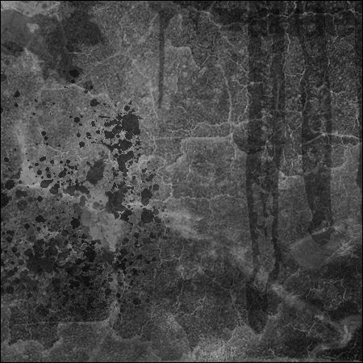

#14046 1 2007-02-14T21:55:27Z catspride Before we start. This thread has been given the 'Seal of Approval' by BWD. Thanks man.
I didn't want to invade on anyone elses thread, but at the same time, I didn't want to make another one of these. But, oh well.
I was just messing with Photoshop and I came up with a random picture. I will be submitting a few of my works here from time-to-time, so take what you like.
#297356 2 2007-02-14T22:07:29Z Navick That's hot.
You might want to change the topic title to "xdude's Images", BTW.
#297774 3 2007-02-16T00:31:15Z catspride Thanks Jakel.
Here's a sigtag for those who love Twistkill.


Not to take away Templex's job, but Twistkill is special.

#297775 4 2007-02-16T00:32:37Z silent_night Not to take away Templex's job, but Twistkill is special.
Yes he is. Nice images to.

#297808 5 2007-02-16T03:08:28Z catspride Anyone play poker? Here's me getting 4 aces.

#297813 6 2007-02-16T03:18:41Z Twistkill #297823 7 2007-02-16T03:50:44Z Shrukan #297831 8 2007-02-16T04:19:48Z catspride Yea, this one was frigged up... Delete this post if you want, mods.
#297842 9 2007-02-16T06:05:55Z Harley @Last one: riiiiigght...
Love the others though
#297858 10 2007-02-16T09:03:03Z ska I didn't want to invade on anyone elses thread, but at the same time, I didn't want to make another one of these. But, oh well.
I was just messing with Photoshop and I came up with a random picture. I will be submitting a few of my works here from time-to-time, so take what you like.

Awesome! can I use this in my multimedia project? We're designing caution signs for a work & safety program...
#297883 11 2007-02-16T11:40:15Z Limer some really nice stuff here brian. keep it up
#297907 12 2007-02-16T13:29:46Z catspride Awesome! can I use this in my multimedia project? We're designing caution signs for a work & safety program...
Sure, go right ahead Ska.
EDIT:


#297966 13 2007-02-16T20:42:32Z silent_night
Good choice for a smilie to use!!!
#297979 14 2007-02-16T21:05:19Z Bloodbath Nice thread
")
I will be viewing it often as your images are pretty cool

lol @
#298004 15 2007-02-16T21:39:32Z Impulse OMFG! When I left, you pretty much sucked compared to me. Now you have surpassed me. How do I let these things happen?

Thats freaking amazing! How do you get it so techy?
#298014 16 2007-02-16T21:59:07Z SamuelDKelso Props on the uber long sig-tag!!
*saves*
#298318 17 2007-02-17T20:21:16Z catspride lol, thanks.
Off topic: This guy is just raping the topics. He posted in a topic that wasn't posted in since October.
Dumm Dum Dum...

And I posted there just to ask him why he resurected that topic.
#298431 18 2007-02-18T00:44:11Z Impulse lol, thanks.
Off topic: This guy is just raping the topics. He posted in a topic that wasn't posted in since October.
Dumm Dum Dum...
And I posted there just to ask him why he resurected that topic.
Woah, shouldn't he get warned?
#298443 19 2007-02-18T01:07:40Z Twistkill lol, thanks.
Off topic: This guy is just raping the topics. He posted in a topic that wasn't posted in since October.
Dumm Dum Dum...
And I posted there just to ask him why he resurected that topic.
Woah, shouldn't he get warned?
It's not that serious... As long as he didn't spam or post off-topic garbage, he should be fine.
#299041 20 2007-02-19T21:43:06Z catspride Just want to add Godoftheredmoon's set I made.
[image lost: av-5121.jpg] +

#299065 21 2007-02-19T22:52:48Z Impulse #299077 22 2007-02-19T23:22:50Z catspride I'm not sure about it being better, but I like it.
And thanks dude.
#299427 23 2007-02-21T01:44:33Z catspride More images.
A signature for max_ride that I made.
And one for exuberance.
#299430 24 2007-02-21T01:47:13Z Navick Hah. I
the last one. It gave me a good laugh.
May I have permission to maketh one of these threads, sirrah?
#299432 25 2007-02-21T01:50:43Z catspride Oh, go right ahead master.
I'd be glad to view your images. I love your work.
#299435 26 2007-02-21T02:00:49Z Zres These are great trooper! Keep up the good work!
#299440 27 2007-02-21T02:24:24Z Exüberance heh
TEH FIREFOXZORZ!!!!

Thanks
now I just need room for it...

Where'd you get the firefox image? It looks very... vector-ish. It kind of looks traced, like my avatar.

Only I didn't trace it as well, so my avatar doesn't have as much detail.
#299441 28 2007-02-21T02:34:09Z catspride I was just surfing through the net and found it.
I don't think it's a vector though. Just noticed that yours was, after you said.

#299454 29 2007-02-21T03:40:45Z Exüberance Yeah, the image itself is pixelated (you can't use an SVG (scalable vector graphic), and SWF doesn't seem to work for me for some reason), but I explored a vector version is Flash...
*
I know what I'll do. I'll take Firefox out of my avatar, and make the Game Maker avatar my avatar until I make an animated one (N blasting chainguns with 2 handguns), and I'll set the firefox sig as my signature.
#299456 30 2007-02-21T03:42:29Z catspride Awesome. Glad to see that it will be in use. I could make you any other ones as well. But, post it in Sigs on Demand, please. I don't want to take any business away from those great atrists.
#299467 31 2007-02-21T04:19:06Z Exüberance Nope. I like this one... at least for now. Good work. *gives xdude a cookie*
#299481 32 2007-02-21T05:00:25Z catspride *Eats cookie and wonders why there is no credit given to xdude*
I don't add my 'xdude credit' into the sig because it obviously takes away part of the sexyness. So, if you would, and if it weren't any trouble, could you credit.
#300292 33 2007-02-23T18:06:36Z Britannia Ever thought of making your own 354x354 'Seal of approval'?
Because, well, at times like this...
This thread gets... Attachment (lost): post-20-1172253996.png
#300312 34 2007-02-23T19:51:28Z catspride Heh, friggin' awesome man!
Thanks so much Britannia.
#300448 35 2007-02-24T01:31:43Z Impulse Your images are so sexy! Could you make that banner and userbar for wxSand? Like I asked in the PM... Then you could post it in here and my signature would be filled with even more of your great work!
#300651 36 2007-02-24T16:46:57Z catspride I will try the banner now GOTRM.
For now, a Halo 3 background!! There's one pretty similar on the net that I looked at for the idea. But, I made this one (plus, I think it has a different background).

#300849 37 2007-02-25T02:54:37Z catspride Anotha!

If you want any of these, go ahead. And I can edit them too.
#300853 38 2007-02-25T03:03:59Z Everblast44 Xdude make a name for the inmage group contest please.
#300958 39 2007-02-25T09:06:49Z catspride Added name to image group.
And... A sig and avy for Everblast44.

+

#301110 40 2007-02-25T21:58:40Z catspride Here's a tut I followed for the next image. It's in German, but you can still pick out what he's doing.
http://r0man.de/tutorial_1.htm
Plus, search for this guys brushes on
www.deviantart.com , he's brilliant.

#301112 41 2007-02-25T22:04:42Z Navick Here's a tut I followed for the next image. It's in German, but you can still pick out what he's doing.
http://r0man.de/tutorial_1.htm
Plus, search for this guys brushes on www.deviantart.com , he's brilliant.
Haha. I translated that entire site with the Google translator; I love that guy. His brushes rock. I use the "100px Overlay Color" tutorial all the time.
#301113 42 2007-02-25T22:09:20Z catspride WHaaaaa!!
Google translator ehh.. Can you post it in English for me somewhere.
#301116 43 2007-02-25T22:14:22Z Navick WHaaaaa!!
Google translator ehh.. Can you post it in English for me somewhere.
Ach... Well, here's a site that has a website translator function.
http://www1.worldlingo.com/SG57TOc3OQEJRe5...BRzn1/translate#301126 44 2007-02-25T22:33:31Z catspride Thanks. here you go.

EDIT: This one turned out a little better.

#301127 45 2007-02-25T22:33:31Z catspride Gahh

Delete this post please.
#301381 46 2007-02-26T20:33:55Z catspride Triple post!!! GAHH!
Meah. It's only images, and that last post was unintentional.
Another.

#301385 47 2007-02-26T20:59:08Z Chase That looks really sweet!
I challenge you to make me a sig!
#301394 48 2007-02-26T21:18:18Z catspride Hah! A challange eh.. Well, I will do it!
This is your way of getting me to make you a sig isn't it? Meah, it worked.
I'll make it right after basketball. Later.
#301419 49 2007-02-26T22:00:21Z Exüberance *Eats cookie and wonders why there is no credit given to xdude*
I don't add my 'xdude credit' into the sig because it obviously takes away part of the sexyness. So, if you would, and if it weren't any trouble, could you credit.
GAH!! I forgot to put it in

*adds line of credit (lol) and gives xdude another cookie*
#301496 50 2007-02-27T02:56:50Z catspride Thanks.
Here's another quick one.

And another.

And another.

#301929 51 2007-02-28T23:09:22Z catspride Here's Chase's sig and avy.
+
Ok, problem fixed.
#302159 52 2007-03-02T03:59:47Z DemonzLunchBreak I challenge you to make me a sig! (although I might not use it right away, I have a bit of a queue building up).
#302589 53 2007-03-05T00:48:52Z catspride Alright Demonz, I will try my best.
Here's another background I made. This is for a good friend. (I never made that guitar btw, it was just a render)

And a sig for her.

#302645 54 2007-03-05T04:11:30Z catspride Sigtag for anyone.

#303024 55 2007-03-06T20:28:19Z catspride Made Obby a sig.

Do you guys even look at these? Demonz, yours is coming up.
#303130 56 2007-03-07T01:12:45Z Everblast44 Yeah I look for updates every day and I see it getting better and better sorry im not useing your siggy any more =(
#303140 57 2007-03-07T02:39:04Z DemonzLunchBreak xdude, these are incredibly sexy. Of course I look at them.
#303145 58 2007-03-07T02:47:55Z Navick No offense, but I think that ever since you read r0man-de's tutorial, your skill has decreased. I love Mary's desktop background, but Obby's (#2), Chase's, my two, rocket_thumped's two, and Kimmie's (#2) aren't very good quality and don't look very good IMO. Obby's (#2) is too large and simple, with the text being too white, Chase's is too sharp; the curve has un-blended pixels, mine are too sharp or simple too make, with the text being horrible, rocket's two are very, very bad quality, and Kimmie's (#2) is too simple. Sorry, but I'm not liking this new style of yours.

#303156 59 2007-03-07T03:04:53Z cetormenter ^ agrees with Jackel, but none the less the sigs and avatars you make are very nice keep up with the good work.
#305308 60 2007-03-15T02:57:13Z catspride A button logo lookin' thing. Use abuse.

#305333 61 2007-03-15T06:00:27Z Guest Wow, these look the best, you certainly have a talent, x_dude. I am
so putting a link to this in my signature!
And that cool looking button thing is randomly cool. *click*
#305390 62 2007-03-15T17:32:41Z catspride Thanks.
Here's a sphere type thing. (I used tutorials for these by the way)

And a beautiful pearl necklace.
#305587 63 2007-03-16T09:44:50Z Ignate I REALLY should visit this thread more often.
#305855 64 2007-03-17T16:49:38Z catspride I just made you guys something for Patty's Day!!

#305954 65 2007-03-18T02:16:30Z catspride Just made a background. Simply added an image to a background I made.
Enjoy!!!!!

#306186 66 2007-03-18T23:04:06Z usaswim How do you do that stuff with Photoshop?
I have PSP11 and Fireworks 8 and I can't do a thing!!!
#306192 67 2007-03-18T23:32:17Z catspride I learned from some very good artists. BWD and Harley, mainly.
But, other than that, tutorials that I found at
www.pixel2life.com and other sites. I still don't know a lot about PS, but I learn as I go.
#306415 68 2007-03-19T23:00:54Z Demonized Wowzorz! Your sigs are hot! Can you make me one? Maybe with the entire AFI band in the middle huh? With my name in the top left corner? huh?huh? Am I annoying? Huh?
#306554 69 2007-03-20T10:15:14Z catspride Sure thing, you annoying sonuva.... Just kidding. I'll do it asap.
EDIT: Size? Colour? Text?
#306629 70 2007-03-20T20:40:03Z Demonized Yes OMG I am annoying! Sorry about the size colour and text lol...
Size: 500x250...
Text: Braggadocio (yes I am very random!
Colour: Black background, red text. Or Vice Versa. I prefer Black background with red text mostly...
Hope you can do it!!!

#307001 71 2007-03-22T19:32:19Z catspride That's a really big signature. But, I will make it, considering you will use it for something else.
If you want something 500 x 250, here's an image I found from the site.
http://buzznet-23.vo.llnwd.net/assets/user...11745834973.jpg#307477 72 2007-03-24T18:38:10Z catspride Here's an interesting sig. I sort of copid the style of Cooby's sig for this. It's girlish too, so I guess Kimmie would be the only one who may want it.

#307505 73 2007-03-24T20:42:07Z fateweaver Quote: Me on Signatures on Demand
Primary colours: Green
Theme: Grass
Renders/images: None, I'd just like blades of grass
Text: fateweaver - Font: French Script MT (You can make it a bigger size to make it more legible, but I would like to have it quite small, and I would also like the text to be white.)
Complexity: Don't mind.
Matching avatar (yes or no): Yes, please.
Dimensions (size): The same size as silent_night's current sig image.
Preferred artist (optional): Anyone who can do it as soon as possible would be amazing!
Thanks for your time!!
No one's done that yet.
Do you think you could?
Thanks,
-fateweaver
P.S. - Awesome images!
#307514 74 2007-03-24T22:09:31Z catspride Sure. To both of you and metalkid9, once I get the sigs done I will post it in the sigs on demand thread.
Thanks.
#308134 75 2007-03-27T17:01:29Z catspride Here's a style from Harley's thread. He's amazing by the way, you should go look at his images.


#308542 76 2007-03-29T10:23:38Z catspride RanDoM

#308545 77 2007-03-29T11:28:35Z Harley last 2 posts!
Thanks!
you /must/ hit me up with those sparkle brushes, and where you got the headphones/speakers from!
~Harley
#308569 78 2007-03-29T17:36:30Z catspride Heh...
An attempt at water.

#308816 79 2007-03-30T14:06:16Z catspride A simple background that I just made.

Pretty entertaining images, I never took time to get large detailed areas with gimp. But I have to say, I envy your sig.
BTW, would anyone recomend Blender 3D for downloading, it's free, but I want to make sure that its' safe. It's from GNU, like Gimp, but I just want to make sure because I don't want it to be a trojan and give my computer a virus or any spyware.
A axiom is that for computers, convenience is the enemy of security

#308919 81 2007-03-30T21:44:38Z catspride I have never used it, I wouldn't know.
Here's another one like my sig.

#308956 82 2007-03-30T23:41:48Z Harley polar coordinates and wind ftw!!!!
hehe everyone one takes Jakels font!
#309199 83 2007-03-31T16:48:19Z catspride DeviantArt image...

#309207 84 2007-03-31T17:59:35Z usaswim Do you know how to make glitter?
Something like this:

#309208 85 2007-03-31T18:12:29Z catspride No, I don't. I'd be glad if you showed me though.
#309220 86 2007-03-31T18:56:21Z usaswim You have PSP, right?
Part 1
Part 2
*better-looking glitter images will need more layers. It's worth it!
#309228 87 2007-03-31T19:36:01Z Navick You have PSP, right?
Part 1
Part 2
*better-looking glitter images will need more layers. It's worth it!
No, he has Photoshop CS2.
Back ontopic:

Shiz, you're amazing! How did you find out how to get that signature effect?
#309248 88 2007-03-31T20:50:30Z catspride My current signature? I followed a tutorial, but it's only easy. Very easy.
http://www.infinitedesigns.org/index.php?cat_id=1&id=6#309252 89 2007-03-31T20:59:59Z usaswim I was trying to imitate xdude's sig but instead I cam up with this

Now, wth did I do?
#309254 90 2007-03-31T21:05:10Z BeSilence well personally i think that ROCKS
#309264 91 2007-03-31T21:24:17Z catspride What rocks? My socks? The font? My third nipple?
Well, usaswim's image is pretty cool.
#309271 92 2007-03-31T21:31:36Z usaswim Yeah, I made a blob of trash and used the kaleidescope effect, and added some random "vector" layer, because it asked me to, and some other random stuff, like wind and spiky halo. Although, how do you make the name more visible?
#309273 93 2007-03-31T21:46:38Z catspride Duplicate your text layer and do certain effects with it. That's what I do.
#309408 94 2007-04-01T04:33:59Z BeSilence this doesnt look like the thread to say this in but SOMEONE make me a sig or an avatar or both or a kitten
#309605 95 2007-04-02T13:31:29Z catspride I'm attemping to please one of my friends by showing a layout of a website. Here's what his would possibly look like if I had my way.
(it's just a small sample, btw)

#309936 96 2007-04-04T00:42:07Z catspride My current sig and av.

+

#310278 97 2007-04-05T21:59:22Z catspride A little something.

#310285 98 2007-04-05T22:27:34Z silent_night I think that it says Brian Elleydreh, you name. I'm probably wrong about your last name tho.
#310288 99 2007-04-05T22:34:54Z catspride Indeed you are. That second E that you thought, is actually an S.
But, it's suppose to be Ellsworth.
#310294 100 2007-04-05T23:03:36Z silent_night Wow I was off. I can't read the text tho, so thats why I didn't guess right.
#311428 101 2007-04-09T02:00:19Z catspride Here's a quick background I made. I seen one very similar on a website so I imitated it. (with a few minor changes)

#311435 102 2007-04-09T02:12:33Z smort MINOR changes? Was that pun intended? By the way, you r 73|-| b3$7 9r4P|-|1( d3$19|\|3r 3\/3r (teh best graphic designer ever)... or at least on the forums.
#311438 103 2007-04-09T02:19:00Z catspride Wow. Thanks a lot.
The 'minor' pun wasn't intended, I didn't even notice it until you said.
#311580 104 2007-04-09T18:17:18Z catspride Another background...

#311583 105 2007-04-09T18:38:58Z smort 
/me sets as background
#311584 106 2007-04-09T18:39:04Z Gforce20 Teh sweetness background!
#311599 107 2007-04-09T19:29:45Z smort I hate to be demanding, but could you make a better border for the middle image?

#311646 108 2007-04-09T22:22:41Z catspride Sorry about that, I was in a rush.
I will fix it now.
EDIT: This was the best that I could get, sorry.
http://img293.imageshack.us/img293/3896/ba...nd31copysy3.png#311655 109 2007-04-09T22:53:41Z Navick Another background...
Could you give me the .psd file for that? The background seems a little plain, but overall, it's amazing.
#311677 110 2007-04-09T23:59:18Z catspride I sure can. Problem is, I never sent anyone a .psd before, so you would have to teach me how to send it, please.
#311757 111 2007-04-10T02:36:01Z usaswim I don't think .png is a good format to save that in. Try .gif or .jpg (like I even know the difference)
#311763 112 2007-04-10T02:40:46Z Navick http://www.psdnow.com/
Great sig. I think that I'll see what's in EdgeOfNowhere.
#311779 113 2007-04-10T03:17:35Z catspride I tried to upload it and it says:
Invalid File Type
#311815 114 2007-04-10T08:47:28Z Harley I don't think .png is a good format to save that in. Try .gif or .jpg (like I even know the difference)
.png is the /best/ filetype for anti aliasing, as it is lossless, meaning it doesn't lose and pixels (icluding keeping the semi-transparent ones, like on that corner). .jpeg and .gif are best for the web, and photos, because they do not support large areas of similar colours, and 'lose' transparent pixels. .gif is bad for transparency, because of the nature of the restricted 256 colours, it doesnt have space for the semi transparent pixels. see how my award is centered, it has a .png in front of it, and for the smart surfers (safari, opera, firefox, IE7) it is invisible.
---------------------------------------------------------------------------------
.png is the best, and is lossless, and I'm glad that IE 7 finally supports .pngs.
@xdude: shmexy
#311854 115 2007-04-10T12:30:11Z Samrat16 I sure can. Problem is, I never sent anyone a .psd before, so you would have to teach me how to send it, please.
Zip it up! Put it in a compressed folder and you can attach it to a post.
#311906 116 2007-04-10T19:41:47Z catspride I sure can. Problem is, I never sent anyone a .psd before, so you would have to teach me how to send it, please.
Zip it up! Put it in a compressed folder and you can attach it to a post.
Smartass.
#312056 117 2007-04-11T03:41:15Z catspride Still didn't work.... Won't let me attach.
Here's another attempt at a background. So plain though, and the border ruined it, I think. EDIT: Removed border.

#313520 118 2007-04-15T21:18:23Z catspride A slightly ''tech'd'' out sig.

And a fractal one.

#313882 119 2007-04-18T02:10:38Z catspride #314006 120 2007-04-18T19:55:41Z Navick #314145 121 2007-04-19T01:54:23Z catspride Thanks. Your sig looks wayy better than any image here. It's awesome!!
For a couple friends.

#314621 122 2007-04-20T23:04:38Z catspride Obbmeister.

#314661 123 2007-04-21T03:09:40Z Harley Lovely use of those fractal brushes, VERY well done
~Harley
#314666 124 2007-04-21T03:28:19Z catspride Thanks Harley.
Anyone like the Sens?

#314806 125 2007-04-22T00:38:39Z catspride Made minutes ago.

#315138 126 2007-04-23T02:11:10Z catspride For a friend.

#315188 127 2007-04-23T10:51:35Z smort 1251645 views! ...quite a few of these have become my background. I just can't choose.
EDIT: lol there weren't actually 1251645 views.. I just thought there was because The window was squished and the replies and the views were mixed together.

silly me.
#315297 128 2007-04-23T22:03:30Z catspride Thanks. At least someone (besides myself) is getting some use of the work.
EDIT:
To Jakel #315302 129 2007-04-23T22:20:54Z Navick Made minutes ago.
Whoa.
#315325 130 2007-04-24T00:05:19Z catspride Jakel, you're so awesome that I just had to. I like yours a lot better though.

#315330 131 2007-04-24T00:16:18Z Navick Jakel, you're so awesome that I just had to. I like yours a lot better though.
Hm? Oh, I didn't make my sig. If you highlight the text below the image, it says in white text: "Thanks, ka05". I cropped my sig from ka05's '
Fluid Motion Wallpaper' from deviantART. That still looks awesome, though.
#315338 132 2007-04-24T00:38:36Z catspride Oh. Well, it still looks great, and I know ou can make just as good... wait, even better images than that.

#315341 133 2007-04-24T00:44:56Z Navick Oh. Well, it still looks great, and I know ou can make just as good... wait, even better images than that.
I'm not sure. ka05 is pretty damn awesome.

Thanks for the sig.
#315454 134 2007-04-24T12:38:22Z Samrat16 Happy Birthday, XDude!!!!
#315545 135 2007-04-24T19:40:50Z Demonized Everybody! Let's give xdude a nice hearty 'Happy Birthday' for all the work he has done!!!
So, have a happy birthday full of booze and pr0n!!! And nice gifts as well!
")
#315555 136 2007-04-24T20:22:48Z Samrat16 Let's give xdude a nice hearty 'Happy Birthday' for all the work he has done!!!
Wait for it...
Now!

Just a cropping of my new created
wallpaper.
So, have a happy birthday full of booze and pr0n!!! And nice gifts as well!
Have a good one!
#316112 137 2007-04-27T03:21:37Z catspride Awweee man!!! If I had seen that before, I would've used it! It's smexy. Thanks.
Here's another quick one, I need to take my time on one of these, sometime.
http://img183.imageshack.us/my.php?image=burntcopynz6.png#317394 138 2007-05-01T21:47:54Z catspride Metanet. I can replace the text if anyone wants this.

#317413 139 2007-05-01T22:50:30Z Navick Metanet. I can replace the text if anyone wants this.
Ohmygodsexy. It would look great in blue... *nudge* *nudge*
#317417 140 2007-05-01T23:05:04Z catspride #317467 141 2007-05-02T02:10:30Z McP3000 I personally think the metanet one looks better in red...but anyway, i just wanted to say that is by far the best N sig i have ever seen. Serious.
#317474 142 2007-05-02T02:16:46Z catspride I personally think the metanet one looks better in red...but anyway, i just wanted to say that is by far the best N sig i have ever seen. Serious.

Thanks! I like the red one better too.
#319433 143 2007-05-08T06:45:38Z catspride Long time.

#319460 144 2007-05-08T11:36:33Z smort no see.
I wish vertical sigs were possible on the right or left side of your post.
I like the glowie-ness and the style.
#319728 145 2007-05-09T04:58:50Z catspride Thanks! I wish there were an option. Either have your sig horizontal (as is), or vertical (to a maximum of 200 px). That would be nice.
#319814 146 2007-05-09T19:21:49Z Samrat16 I think you meant to make a sig something like this:

By combining the image you made with your sig.
#320854 147 2007-05-13T18:34:35Z catspride That's actually not a bad idea.
Here's something...

#320863 148 2007-05-13T19:01:42Z usaswim How'd you get the colors to be so light?
Here's one in green:
Attachment (lost): post-20-1179082902.png
#320866 149 2007-05-13T19:20:20Z wishyouwerehere xdude rocks my socks
Attachment (lost): post-20-1179084020.jpg
#320868 150 2007-05-13T19:26:48Z catspride How'd you get the colors to be so light?
Here's one in green:
I can make it light (er) because I have the .psd file. I believe that's the reason.
And thanks wywh. What's up with the wtf sig??
#320872 151 2007-05-13T19:54:23Z Evil Bob That last one is really cool. The greyscale one with the crazy splaters and textures.
Ohh.. And that is really cool that you put a link to my images in your sig
#321009 152 2007-05-14T02:16:23Z catspride Thanks a lot, and no problem. I really like your images, that's why I have it there. More ways for others to see your talent too!!
#321075 153 2007-05-14T10:24:35Z catspride A sig for Ska.

#321343 154 2007-05-15T04:22:37Z ska Thanks, here's another gem that xdude found: (Cropped for sig Usage)
Attachment (lost): post-20-1179203134.jpg
#321767 155 2007-05-16T21:45:30Z catspride Thanks Ska...
Here's a sig for BWD's little contest majigger.

#323120 156 2007-05-21T20:08:55Z catspride Made for a friend. Just brushes and that one lighting effect....

#323121 157 2007-05-21T20:14:15Z smort that's a very interesting look. I'm liking the new sigtar.
#323130 158 2007-05-21T20:28:11Z catspride Thanks, Smort.
Make note, I didn't make it, just cropped.
#323170 159 2007-05-21T23:26:21Z Exüberance Could you re-upload that sig you made for me? It seems to no longer be there and I just used a link to the graphic you posted in my sig instead of putting it in my photobucket album.
Or is that just my poor internet connection not loading images fast enough? I can see images in other people's sigs though, Strange thing is that it doesn't say 'user posted image', which it usually does when a image URL is invalid...
#323717 160 2007-05-24T01:11:23Z catspride Your sig is showing... Unless you just want the URL...
http://img151.imageshack.us/img151/1129/exubza8.jpg
Something else for a friend, just frigging with this..

#323732 161 2007-05-24T01:56:43Z Exüberance Your sig is showing... Unless you just want the URL...
Yeah... that was strange. Must've been my internet connection or something.
EDIT: Now I'm using my own sig. Ah well, I used your sig for... *counts* 93 days. :good:
#323926 162 2007-05-24T22:15:47Z catspride Just friggin'....

#324750 163 2007-05-27T22:40:09Z catspride Anotha Random siggy..

#324751 164 2007-05-27T22:42:03Z smort Ooh... nice.
Umm.. do you think you could make the background red and put in a phantom of the opera half mask? I might like to use it.
#324756 165 2007-05-27T22:47:04Z catspride Sure thing.. Specific image and where??
#324759 166 2007-05-27T22:55:27Z smort umm... I couldn't find the HALF mask, but I found the original.
and, right in the middle would be fine. where all the beams are coming out.
#324761 167 2007-05-27T22:56:49Z catspride Alright.. problem is, I made the background colour and the splatters in one layer, yea, I'm smart like that... so, the splatters may be a bit different, unless I can somehow just change the b/g colour...
EDIT: Ok, I got close to it... still looks good. Where'd you want your name? If you like it..

#324773 168 2007-05-27T23:27:09Z usaswim Anotha Random siggy..
Wow. I totally
it.
#324783 169 2007-05-27T23:46:45Z smort where it is now is good, thanks. thanks you ALOT.
#324786 170 2007-05-27T23:53:57Z catspride Okay.. So, the mask is good like that too?
And, thank you both.
#324787 171 2007-05-27T23:56:36Z smort yes... and I forgot to mention. I like the glowy-ness of it.
I'm looking pretty bad ass now.
-looking-
#325045 172 2007-05-28T19:53:12Z catspride Heh... bit plain. Wish I could have N leaning on the M...

#325057 173 2007-05-28T20:32:02Z usaswim
Did it just fall from the sky?
Oh, and on the left side, I can see the layers of grass. Try making it finer.
#325060 174 2007-05-28T20:35:53Z CDotLeach Cooooooool...
#325155 175 2007-05-29T00:08:47Z catspride
Did it just fall from the sky?
Oh, and on the left side, I can see the layers of grass. Try making it finer.
Alright, I think I have it fixed. A little anyways...
#325177 176 2007-05-29T01:34:11Z usaswim Heh. You could have N sunbathing and an umbrella drink next to him
#325452 177 2007-05-29T20:43:59Z catspride Another image for a friend... I like this.

#325461 178 2007-05-29T20:58:57Z Samrat16 Nice imaging.
One thing I've never been able to do: reflections. Could you help me with that?
#325464 179 2007-05-29T21:05:32Z catspride Thanks!! I may change a few things from it..
PM sent
#325477 180 2007-05-29T21:58:52Z usaswim Actually,
here's a reflections tutorial.
#325494 181 2007-05-29T22:28:58Z catspride Yea, there you go, if you want a better understanding.
Thanks usaswim, I had forgotton about that one.
#326049 182 2007-05-31T18:44:31Z Samrat16 Yeah, thanks!
#327095 183 2007-06-03T21:39:57Z mXr Your images are awesome xdude, just awesome...
#327100 184 2007-06-03T21:46:30Z Spawn of Yanni Moto! Wow, I haven't seen you on in ages. Oh, and xdude, I don't think I told you how much I love your sig. You're just brilliant at imaging.
/me reads the text at the bottom of xdude's sig
...well, whatever. You still are amazing.
#327104 185 2007-06-03T21:52:14Z usaswim Amazing at cropping
and imaging
Also, I love that area between the thing and that other thing. Fits very nicely.
/me goes copy
EDIT: Heh. I did it. Should I keep the font or change the style or change it to match the font underneath it?
#327125 186 2007-06-03T22:18:38Z catspride Wow, cool. Good job with it usaswim, a lot better than what I did. It looks good, keep it!!
#327157 187 2007-06-03T23:47:02Z usaswim Wow your new sig is awesome... but it needs fixin'.
Yeah, I hate when things don't turn out like they're supposed to, so I magnify and select precisely. I even keep a notepad by to record the dimensions of every piece I'm putting together. At the end I add them up and make sure they equal the dimensions I'm going for.
EDIT: Wow, I just had a great idea of how to make my sig better.
*mouth waters*
Wow... motocrosser's sig is awesome.
#327164 188 2007-06-04T00:11:18Z Navick Wow... motocrosser's sig is awesome.
I created it for him. Do you see the light star in the lower-left corner? That's my copyright symbol.
I personally don't like the way you did the reflection, xdude, but the background is awesome.
#327286 189 2007-06-04T08:38:47Z Spawn of Yanni xdude, if you get that aligned, it would look just...amazing. And usaswim...;_; For the members who turned off spoilers - like me - the spoiler tags show up in your sig, messing up the alignment.
#327328 190 2007-06-04T13:17:40Z usaswim ^Not that badly....Oh, I see what you mean. I'll put it on the bottom then.
#327345 191 2007-06-04T15:04:19Z Samrat16 Your request=completed:
Here.
You probably won't use it because you already took time to make your own and align it, but you might want to see how it turned out.
#327705 192 2007-06-05T18:13:32Z catspride A mini tag if anyone ever wants to use it... Request some, I will make them.

and this tag..

#328376 193 2007-06-07T10:50:13Z catspride Some little image for Ska, even though it's mainly cropped.....

#328409 194 2007-06-07T14:47:00Z CDotLeach xdude can you do animated sigtags?
#328454 195 2007-06-07T18:21:00Z catspride No, I'm not sure how. Wish I could, or wish someone could teach me though... There are a few here on the forums that are good at animated images though.. Can't spot anyone atm though...
#328456 196 2007-06-07T18:37:54Z Spawn of Yanni Mmm, I can do flash animation. If you remember my old avatar, back when .swf avatars were allowed. Not now, though, what with exams and all.
#328589 197 2007-06-08T01:09:19Z Animator Can you make . . .( goes at the brink of imagination) . . .An Avatar that shows a solid gold N, but I mean "the gold you find in N" gold, and for a sig, show N doing the matrix, dodging all sorts of random stuff (be funny) if so, post it.
#328591 198 2007-06-08T01:15:56Z usaswim Oh, I totally love the ber long sigbar. lol, that's a really long eclipse.
#328617 199 2007-06-08T02:08:42Z catspride Haha.. I agree. Thanks for the credit!!
Another...

#330567 200 2007-06-12T21:08:05Z catspride I'm so bored...

#330568 201 2007-06-12T21:09:37Z smort *sigh*
I wish my boredom was as productive and cool....
#330572 202 2007-06-12T21:27:58Z catspride lol.. thanks Smort!!
#330573 203 2007-06-12T21:35:19Z usaswim *sigh*
I wish my boredom was as productive and cool....
LMAO!!!
I'm bored, but I don't know what to make
Also, the background doesn't really fit...
#331050 204 2007-06-14T00:51:04Z catspride #331052 205 2007-06-14T01:13:45Z usaswim Oooh, nice. I love it. Reflections are nice.
#331057 206 2007-06-14T01:31:17Z catspride Thanks!!

#331058 207 2007-06-14T01:44:20Z usaswim Are you bored?
It looks really nice

Just change the font.
#331918 208 2007-06-16T22:59:19Z Animator Can you make . . .( goes at the brink of imagination) . . .An Avatar that shows a solid gold N, but I mean "the gold you find in N" gold, and for a sig, show N doing the matrix, dodging all sorts of random stuff (be funny) if so, post it.
Plllllleeeeaaaassssseeeeee!?!?
#331929 209 2007-06-16T23:28:11Z Weisslenny0 Oooh, nice. I love it. Reflections are nice.
There's a slight glow, too. And did you draw all the black stuff around the edges?
#331947 210 2007-06-17T00:20:35Z usaswim It looks brushed to me...
#331958 211 2007-06-17T00:49:25Z Weisslenny0 Yeah, that's true... Which brush set did you use?
Or if you didn't use one, you could make your own brush set
#332422 212 2007-06-18T02:34:06Z catspride I used brushes, sadly. Wish I could be that good....
The brushes are called
Vintage, but, I searched DeviantArt and I couldn't find it. That's where I usually get all of my brushes.
Another background...

#332485 213 2007-06-18T07:02:18Z Weisslenny0 Nice
Vive la gradient.
Why so much blank space under it? And... did you draw them all?
EDIT: I like the new sig and avatar, by the way.
#332550 214 2007-06-18T13:05:05Z catspride No, I didn't draw them all. Another thing I wish I could do. I just used an effect, that's all. I'm not sure why I left the space underneath either... I need lessons.
Thanks.
#332566 215 2007-06-18T13:56:33Z usaswim I don't really like the city skyline at the bottom. Sorta... doesn't belong
#332577 216 2007-06-18T14:54:56Z Navick I absolutely love your new signature, xdude. It has an amazing style, and you executed it brilliantly.
#332597 217 2007-06-18T15:50:02Z catspride Thank you, good sir. May you be blessed with many chickens.
#332634 218 2007-06-18T17:56:19Z Samrat16 Same comment as Jakel, great sig.
#332676 219 2007-06-18T20:39:41Z Spawn of Yanni Erm, xdude...the background of the post alternates between two colours. Your sig in your second-to-last post looks unbelievable, but the sig in your last post doesn't have a transparent background - or, I should say, doesn't look like it has a transparent background.
#332685 220 2007-06-18T20:49:33Z smort avatar, asswell.
hmm... We'd really need you to post again to tell. might even be a loading issue.
EDIT: oh, yes. Absolutely magnificentaliciously amazing.
#332697 221 2007-06-18T21:08:44Z catspride I seen that too. I'm not sure what's going on.
Another signature...

#332715 222 2007-06-18T21:58:34Z Weisslenny0 Nice!
I like how the different colours are arranged layerwise.
#332721 223 2007-06-18T22:16:01Z usaswim It looks fabulous! I don't particularly like the text, though... Is it Times New Roman?
#332727 224 2007-06-18T22:25:05Z catspride It looks fabulous! I don't particularly like the text, though... Is it Times New Roman?
I think so. I'ma change it now.
EDIT:

#332729 225 2007-06-18T22:31:02Z usaswim
Much better.
8.5/10
Do you think I put too many layers in my sig?
#332732 226 2007-06-18T22:34:35Z smort it`s a beaut. you just keep getting better!
#332767 227 2007-06-18T23:34:51Z catspride
Much better.
8.5/10
Do you think I put too many layers in my sig?
Thanks a bunch!! No, I don't think you have too many layers, looks good.
@Smort, thank you.
#332962 228 2007-06-19T08:35:51Z rocket_thumped #332973 229 2007-06-19T09:37:18Z fingersonthefrets can someone update me on what this bsob thing is about?
#333078 230 2007-06-19T17:57:06Z catspride can someone update me on what this bsob thing is about?
Yea, sure.
Back when I was obsessed with NUMA, I wanted the best ratings, duh. So, I went and multi-accounted, thinking that I would be one of the 'good' authors if I had higher ratings. But, I ended up feeling bad about it all and I wanted the multi-accounting days to be over with. At that time, I figured it would be nice to start over new. Then I made brightershadeofblue.
One map after brightershadofblue, I confessed that I used to multi-account, and they (Sweep and Maestro) deleted all of my accounts except for xdude_. So, I still have the brightershadeofblue email account and I use it for my msn, which is good because I wanted to get rid of the xdude_rox one anyways.
There you have it, my story. Want a chicken?
#333101 231 2007-06-19T19:12:19Z catspride #333104 232 2007-06-19T19:18:12Z usaswim Isn't that pretty much the same thing? Also, how do you make the line on that one and on CTB's? Can't figure it out...
#333105 233 2007-06-19T19:19:30Z catspride Yea, pretty much the same thing, I just wanted to practise it and see if you guys thought it was decent.
What line are you talking about?? I'd be glad to help.
#333106 234 2007-06-19T19:21:12Z usaswim The line in the middle of the sig, as well as in CTB's
#333115 235 2007-06-19T19:34:17Z catspride Oohhh... the ellipse.
Use your ellipsel tool to create a circle. Make sure you make it the size you would like it. Now, once you've doen that, rasterize it, and lower its opacity to about 25, or so. There, I believe that's what you're looking for. If you'd like, I can make a tutorial.
Edit: doen = done
#333117 236 2007-06-19T19:38:09Z usaswim 
Erm, is that an inner glow?
#333203 237 2007-06-19T22:38:00Z catspride It does look like he has an inner glow around the blue rectangle, but, the line through the middle is the same as I described. Instead of the ellipse, it's just the rectangle tool.
Here's something, just messing around with it, that's all.

#333304 238 2007-06-20T02:37:17Z Impulse Thanks.
Here's a sphere type thing. (I used tutorials for these by the way)
And a beautiful pearl necklace.
Woah. These are better than mine.
#333306 239 2007-06-20T02:42:25Z usaswim woot!
You really need to pick better fonts
#333356 240 2007-06-20T03:43:54Z catspride Sorry, I'm not good at that. Which font font do you want??
???

#333360 241 2007-06-20T03:47:54Z Hendor Here's one from ctb's style. First time trying it, so, don't be too crucial.

Wow. That's sooo weird. I had just made a sig almost exactly like that just this morning. I'll attach it. I was going to wait until CTB stop using his so that it wouldn't seem like I was copying him as much. Now usaswim (or LISASWIM as his sig makes it look) has it too.
Attachment (lost): post-20-1182311274.png
#333370 242 2007-06-20T04:12:32Z catspride Nice sig Hendor.
Yea, that's all my fault. I copied ctb to see what I could make. Then I made usaswim one just because. Yours is pretty sweet though.
EDIT: Also, thanks Impulse!! Long time no see.
#334027 243 2007-06-21T16:09:50Z Hendor Thanks
I was just thinking of a way to fix the problem of the post background switching color every other post. You could just open the psd file and delete the blueish background layer. Then, with just the design and no background, save it as a PNG. Problem solved I think.
#334117 244 2007-06-21T20:45:48Z catspride Awesome! Worked great Hendor, thank you.
#334130 245 2007-06-21T21:14:12Z usaswim I don't like your new sig...
...at all.
And your avatar doesn't match...
...at all.
#334143 246 2007-06-21T21:53:41Z smort ^Agreed indefinately.
#334152 247 2007-06-21T22:07:40Z Navick Just as usaswim said, I don't like your new signature. It looks like it's embossed, and I hate embossed.
#334178 248 2007-06-21T22:38:45Z catspride Well... poop. I knew the avatar didn't match (duh
) I just wanted to be different. May as well go make a new one.
Thanks guys!!
#334217 249 2007-06-22T00:19:51Z Hendor That's pretty cool. I like it a lot better. Glad the PNG worked out.
#334225 250 2007-06-22T00:30:22Z catspride #334241 251 2007-06-22T00:57:53Z usaswim It looks loads better.
I still would have preferred black
#334269 252 2007-06-22T02:18:05Z Hendor How many different brush sets are you using to make that sig xdude? Looks to be at least 5 or 6.
#334273 253 2007-06-22T02:24:24Z catspride Wow, amazing signature Hendor. Beautiful!!
To be honest, it's just one big brush. I wish I made it... I'm a lousy ''artist''.
Here, have
it.
#334461 254 2007-06-22T14:51:42Z Samrat16 1 brush!?!
...
#334519 255 2007-06-22T17:47:28Z usaswim 1 brush!?!
...
QFE.
#334527 256 2007-06-22T18:00:47Z catspride 1 brush!?!
...
QFE.
QFE!
Yes.
#334557 257 2007-06-22T19:03:07Z Hendor Heh. Who really cares... It looks good. Glad you like my sig xdude. Thanks.
#334658 258 2007-06-23T00:33:07Z Weisslenny0 Nice. I think I liked your signature better when it was black though (no racism intended).
I don't really like the lighter bit much.
#335442 259 2007-06-24T23:40:57Z catspride Black it is!
I just made a quick background for my bro..

#335471 260 2007-06-25T01:31:16Z smort Aah, the sig is back to the black. nicccccccce.
Wooo! Hockaay!
I never noticed you were from Canadia. Or I just forgot.
Anyway, nice one, all though the font and colour (Canadian spellling ftw) makes me think of Aladdin. Although I see how it fits.
#335480 261 2007-06-25T01:56:38Z catspride Aah, the sig is back to the black. nicccccccce.
Wooo! Hockaay!
I never noticed you were from Canadia. Or I just forgot.
Anyway, nice one, all though the font and colour (Canadian spellling ftw) makes me think of Aladdin. Although I see how it fits.
Heh, I agree. But, it sort of fits
I love hockey!! And Canada!!
#335482 262 2007-06-25T01:59:20Z usaswim I think if your sig had an eclipse it'd look hot.
And if the text had more of a glow...
#335538 263 2007-06-25T06:04:51Z Weisslenny0 It would work, as long as the eclipse wasn't too bright...
And maybe just a tiny bit more glow
Not too much, though.
#335621 264 2007-06-25T16:49:39Z catspride Like so?
#335698 265 2007-06-25T21:28:23Z Weisslenny0 I like it. The eclipse works, and the glow makes the text stand out tons
We'll have to see if people agree, though.
#336965 266 2007-06-29T17:24:16Z catspride A little thing I made for a Facebook group.

#337530 267 2007-07-01T18:30:45Z a-caridi hey, are you taking requests?
#337532 268 2007-07-01T18:38:42Z catspride I feel bad saying yes because I haven't been to the signatures on demand in about two months, but, it depends on what you're requesting. Go for it.
Odd siggy

#337569 269 2007-07-01T19:49:09Z a-caridi I request a random yet delicious signature. Using the color Blue, Teal and Yellow.
Thank you.
#337728 270 2007-07-02T03:00:56Z Demonized Xdude, your art gets more beautiful everytime I visit this page.
Your works has inspired me to use Photoshop, but sadly, my work is never better then yours.
I title thee Xdude, God of the Arts of Metanet Forums!!!
#337863 271 2007-07-02T13:55:05Z Samrat16 Mmmm... Fresh...
#337937 272 2007-07-02T17:44:34Z catspride Xdude, your art gets more beautiful everytime I visit this page.
Your works has inspired me to use Photoshop, but sadly, my work is never better then yours.
I title thee Xdude, God of the Arts of Metanet Forums!!!
Heh, thanks a million.
This isn't April Fools though.
Keep trying man, you'll be awesome in no time, I bet.
#338659 273 2007-07-04T04:16:24Z Animator Can you make . . .( goes at the brink of imagination) . . .An Avatar that shows a solid gold N, but I mean "the gold you find in N" gold, and for a sig, show N doing the matrix, dodging all sorts of random stuff (be funny) if so, post it.
It's been 2 bloody pages.
Are you going to do it or not?!
#338718 274 2007-07-04T10:22:50Z Spawn of Yanni Hey, hey, take it easy, man. If xdude accidentally missed your request, you can kindly point it out to him, instead of acting like a....like that. It's not like he lives his life to serve us, so don't act all high-and-mighty on him, please.
#338723 275 2007-07-04T11:08:55Z Weisslenny0 Can you make . . .( goes at the brink of imagination) . . .An Avatar that shows a solid gold N, but I mean "the gold you find in N" gold, and for a sig, show N doing the matrix, dodging all sorts of random stuff (be funny) if so, post it.
It's been 2 bloody pages.
Are you going to do it or not?!
I thought you asked Usaswim to do that...?
You can't ask two people... it's not good ethically.. or something.
#338762 276 2007-07-04T15:58:42Z Samrat16 It means he's desperate. Or something...
#338767 277 2007-07-04T16:20:42Z Animator No, nevermind. Sorry.
#338777 278 2007-07-04T17:28:16Z a-caridi xdude, are you up for my chaLLenging and random request?
remmember, Blue, Teal and yellow. I know it will be delicious, oh and actually can you also put in a bit of orange somewhere. thx.
#338793 279 2007-07-04T18:33:59Z catspride Can you make . . .( goes at the brink of imagination) . . .An Avatar that shows a solid gold N, but I mean "the gold you find in N" gold, and for a sig, show N doing the matrix, dodging all sorts of random stuff (be funny) if so, post it.
It's been 2 bloody pages.
Are you going to do it or not?!
WTF? You did ask usaswim to do that. I'd rather if you didn't request anything here again, thanks.
#344557 280 2007-07-18T18:57:21Z mXr Moto! Wow, I haven't seen you on in ages. Oh, and xdude, I don't think I told you how much I love your sig. You're just brilliant at imaging.
/me reads the text at the bottom of xdude's sig
...well, whatever. You still are amazing.
Don't worry im still here, just not as much, mostly because of my "PS3" still waiting for 1.5 ... slowly. Oh loving your images xdude keep it up!
#347066 281 2007-07-25T01:42:55Z catspride Hey everyone. Sorry about me just leaving on you all, I'm sure you didn't miss me
Anyways, I'm back now and hopefully I can get a few things doen around here.
#347075 282 2007-07-25T02:15:12Z usaswim You were gone?
;_;
I missed you.
#348769 283 2007-07-30T00:39:47Z catspride Nowhere near as good as usaswim's images.. but, I just wanted to try a style like his, sort of.

#348801 284 2007-07-30T01:54:08Z usaswim Oooh, I like it! But I hate the font
so very much #348806 285 2007-07-30T01:55:55Z epigone I love it. How do you make an image like this?
#348809 286 2007-07-30T01:59:36Z usaswim I love it. How do you make an image like this?
Download fun exotic brushes and play with them.
#348811 287 2007-07-30T02:03:53Z epigone Download fun exotic brushes and play with them.
Heh, that's the main problem I guess. I use gimp. There arn't many fun brushes.
#348817 288 2007-07-30T02:17:49Z catspride I always mess the font up... :S
Epigone, get Photoshop!
I don't like Gimp, but, that's my opinion.
#348818 289 2007-07-30T02:18:40Z epigone Photoshop is so expensive though, gimp is free!
#348821 290 2007-07-30T02:20:43Z usaswim I always mess the font up... :S
Times new roman...
Is this the limit of your creativity?

#348823 291 2007-07-30T02:21:56Z catspride I always mess the font up... :S
Times new roman...
Is this the limit of your creativity?
I don't get it. You mean that I should use TNR?
#348826 292 2007-07-30T02:23:19Z usaswim I'm saying Times New Roman was a /terrible/ fit for that sig.
#348831 293 2007-07-30T02:26:27Z catspride #348833 294 2007-07-30T02:30:31Z usaswim Slightly better.
#348845 295 2007-07-30T02:59:52Z catspride Still can't get good fonts..

EDIT: Fixed... Why was it like that? I checked and I did save as .png, I always do. Odd. Thanks usaswim.
#348852 296 2007-07-30T03:11:55Z usaswim Why jpg? WHY?!
;_;
#348863 297 2007-07-30T03:37:55Z epigone Awesome! Thanks, I didn't even ask for one.
#348870 298 2007-07-30T03:53:13Z catspride Awesome! Thanks, I didn't even ask for one.
You're welcome.. I just felt generous.
#348918 299 2007-07-30T06:05:21Z southpaw Nowhere near as good as usaswim's images.. but, I just wanted to try a style like his, sort of.
For some reason when I look at the left side of this image it reminds me of Animalia, by Graeme Base. Overall I like it a lot. good job.
#349480 300 2007-07-31T21:48:38Z catspride Another background for a friend.....
 http://i10.tinypic.com/4t8da55.png
http://i10.tinypic.com/4t8da55.png#349511 301 2007-07-31T22:59:42Z catspride Also, a free sig if anyone wants it. Just tell me what font and where to put it.

And my current sig..

#349518 302 2007-07-31T23:19:56Z usaswim Hmm, it's interesting. I like it.
#349817 303 2007-08-01T12:51:23Z Samrat16 Oooh... Ahhh...
#350076 304 2007-08-02T02:53:40Z ska Doing a media project. Could you please make a cool web banner saying "Geelong College Virtual Tour"?
Specs.
Glossy
Themed around green and blue colours (suggestion)
Use the banner at the top of this page:
http://www.geelongcollege.vic.edu.au/displ...p?entityid=1135
If you want to or any of the images...
Futuristic looking??
High Res.
Would greatly appreciate it if you could do it.
please PM if you decide to do it. Thanks
#350096 305 2007-08-02T04:59:52Z catspride Alright. I will try my best.
#350169 306 2007-08-02T08:46:14Z ska thanks buddy.
#351672 307 2007-08-05T18:41:46Z catspride Sorry Ska, I still haven't gotten around to making that image.

I did draw an eye in class though. Nothing special.

#351705 308 2007-08-05T20:21:01Z usaswim The black is really harsh in your sig. Perhaps make it a bit gray?
#351713 309 2007-08-05T20:36:44Z catspride Yea, I'll giver a go. Thanks.
Harley suggested that too, so, thanks to you both.
#351740 310 2007-08-05T21:14:28Z southpaw
has anyone claimed that yet? If not I would like it for me sig.
and its cool, I can add my own font.
#351758 311 2007-08-05T22:04:18Z catspride
has anyone claimed that yet? If not I would like it for me sig.
and its cool, I can add my own font.
Go for it!
#351839 312 2007-08-06T03:00:14Z ska Sorry Ska, I still haven't gotten around to making that image.
I did draw an eye in class though. Nothing special.
take your time. I have like a month lol! Thanks again, Brian
#373061 313 2007-10-19T22:41:48Z catspride #373074 314 2007-10-19T23:03:47Z T3chno Nice sigs man.
Your sigs are really smooth.
Love the third one in the above post.
#373076 315 2007-10-19T23:09:44Z catspride Nice sigs man.
Your sigs are really smooth.
Love the third one in the above post.
Thanks.
#373087 316 2007-10-19T23:49:04Z usaswim 1) Font?!!?!
2) font...
I want it
3) Font?!?? Colors are sexy
#373108 317 2007-10-20T00:36:34Z catspride 1) Font?!!?!
2) font... I want it
3) Font?!?? Colors are sexy
I know you hate my font,
always.
#373197 318 2007-10-20T10:44:51Z Ignate This is a new level of awesome. All the sigs in this page look great.
#373281 319 2007-10-20T20:47:46Z catspride I just wanted to sow fingersonthefrets how to do reflections.
Here's a great
tutorial on how to. Harley and a few guys showed me how, but this helps as well.